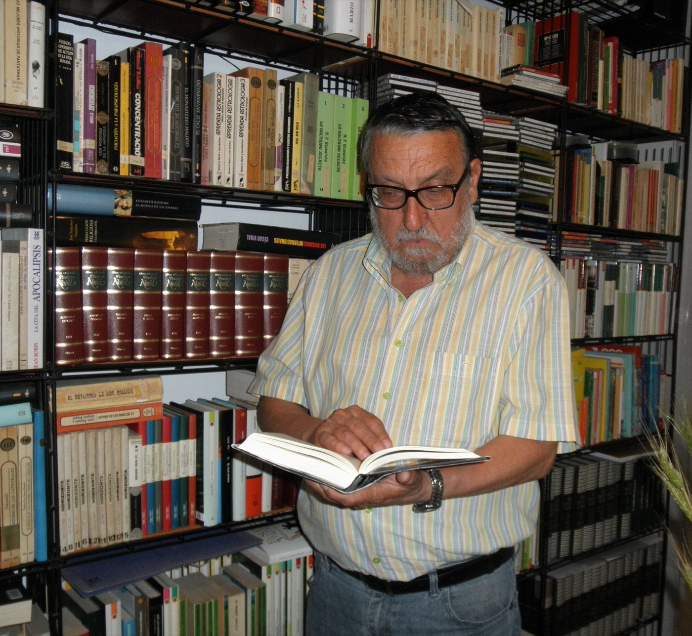
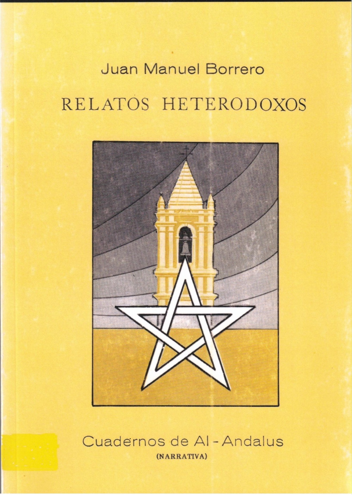
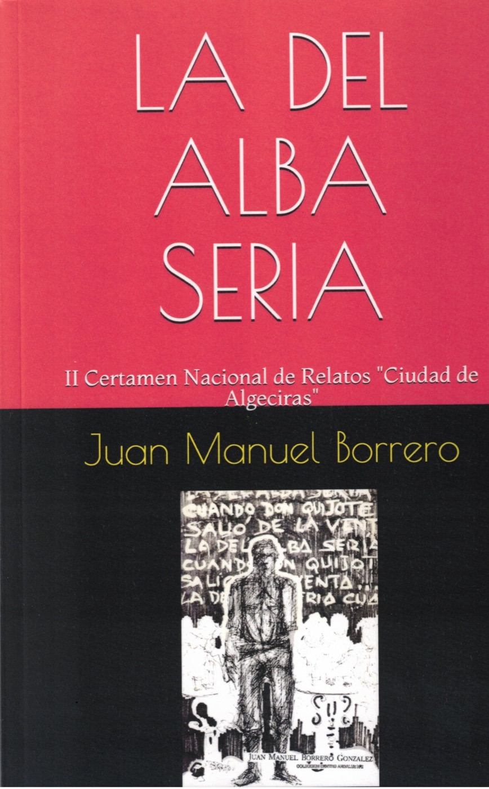
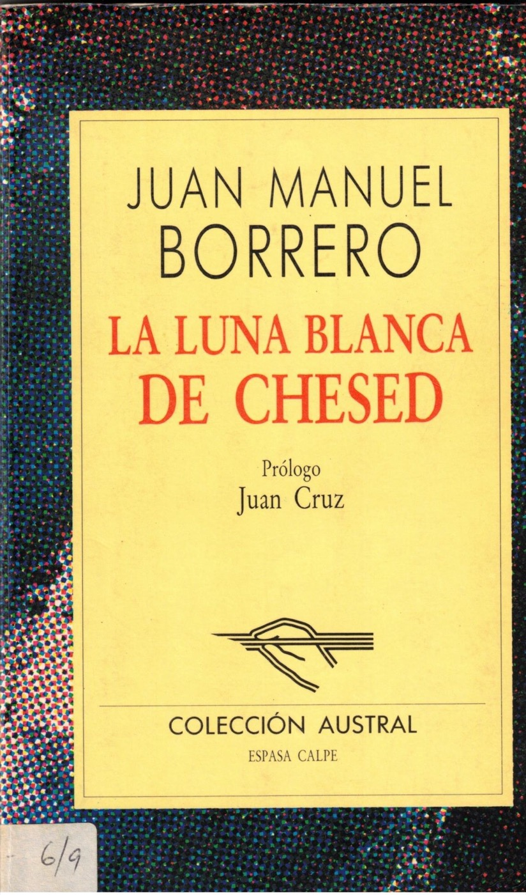
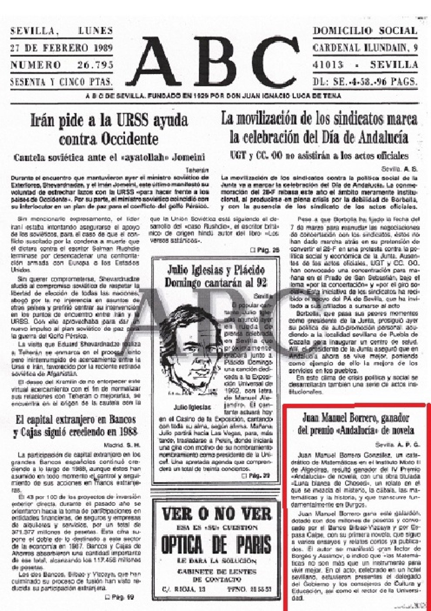
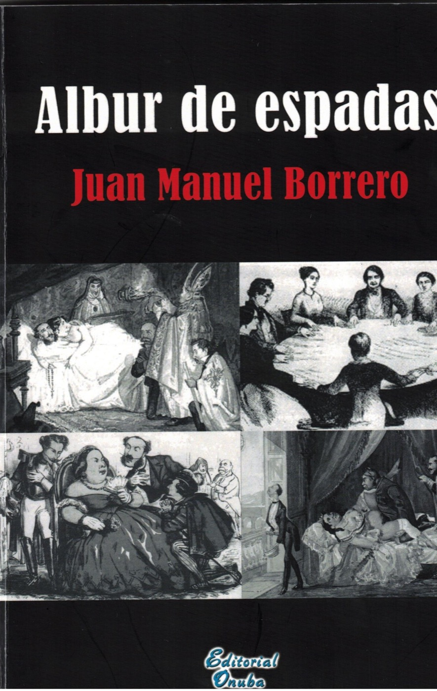
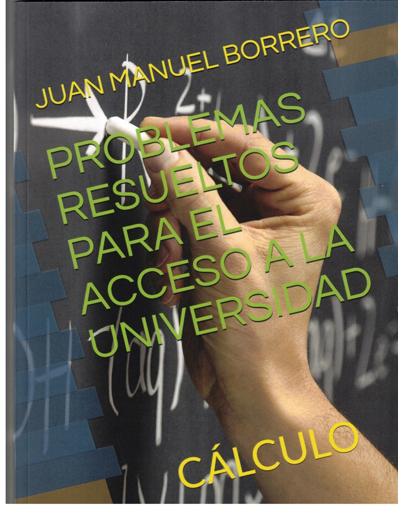

Escritor · Catedrático de Matemáticas
Una voz singular dentro de la literatura andaluza contemporánea, entre el orden matemático y la imaginación.

Juan Manuel Borrero González es un escritor español nacido en El Cerro del Andévalo (Huelva) en 1947. Aunque su formación académica está vinculada a las ciencias, pues es licenciado en Física y Catedrático de Matemáticas1, ha desarrollado una destacada trayectoria literaria que lo sitúa entre los autores andaluces más prolíficos. A lo largo de varias décadas ha cultivado diversos géneros, desde el relato y la novela hasta el ensayo y el artículo periodístico, combinando en muchas ocasiones elementos filosóficos, históricos y simbólicos.

Su primera obra publicada —de fuertes raíces borgianas— fue Relatos heterodoxos2, un conjunto de narraciones que ya mostraban algunas de sus características y que, posteriormente, definirían su proyecto literario: el gusto por lo insólito, la reflexión intelectual y la exploración de los límites entre realidad y ficción.
Esta publicación supuso el inicio de un sello de autor que pronto recibiría reconocimiento nacional.
El año 1989 resultó especialmente importante para el autor3. En primer lugar obtuvo el II Premio Nacional de Relatos Ciudad de Algeciras con La del alba sería4, una obra que consolidó su prestigio como narrador. Ese mismo año consiguió el IV Premio Andalucía de Novela5 con La luna blanca de Chesed6, considerada una de sus obras más relevantes.



Esta novela destaca por la combinación de elementos históricos, filosóficos y esotéricos. Enmarcada en la baja Edad Media, aparecen en ella referencias a la cábala, al pensamiento pitagórico y a diversas corrientes místicas, integradas en una trama donde el misterio y la intriga desempeñan un papel fundamental.
La crítica destacó la originalidad con la que el autor relaciona el orden matemático y la magia.
La crítica literaria7 destacó la originalidad con la que el autor relaciona el orden matemático y la magia, dos conceptos aparentemente opuestos que en la novela aparecen estrechamente vinculados8.
Durante las décadas siguientes continuó desarrollando nuevos proyectos narrativos. Varias de sus obras fueron finalistas en importantes certámenes literarios, en la mayoría de las ocasiones bajo sus seudónimos más comunes: Juan de la Trinidad y Xavier Suquet. Esta circunstancia demuestra tanto su calidad literaria como su capacidad para competir en algunos de los concursos más prestigiosos del ámbito hispánico.
En 2001 publicó Su nombre era nadie, obra galardonada con el III Premio Internacional de Relatos «Canaleta»12. El título evoca la figura de Ulises en la mitología clásica y refleja los intereses narrativos del autor: la identidad humana y la construcción simbólica de los personajes, pululando, en esta ocasión, en las labores de la minería onubense de finales del XVIII, plena de conflictos sociales. Su publicación contribuyó a reforzar su prestigio dentro del género narrativo breve.
Tras algunos años de menor actividad editorial, el escritor regresó con fuerza en la década de 2010. En 2015 apareció En las riberas del Aqueronte13, novela cuyo título remite al río mitológico asociado al mundo de los muertos en la tradición griega. La obra profundiza en cuestiones existenciales, religiosas y metafísicas, integradas en una trama policiaca para desentrañar las actividades criminales de una secta demoníaca, tema este recurrente en la producción de Borrero.
Posteriormente (2018) publicó Los manuscritos de la lechuza14, obra inspirada parcialmente en un relato premiado años antes15 y que combina elementos de misterio, simbolismo esotérico y reflexión cultural.
Lo especial de su obra queda patente en el interés demostrado —no solo a nivel nacional— por la investigación literaria en el ámbito universitario16.
Además de la narrativa, Juan Manuel Borrero ha cultivado el ensayo. Una muestra de ello es Aproximación al hombre mágico (2019)17, donde analiza aspectos relacionados con el pensamiento simbólico, las creencias y la dimensión espiritual del individuo. Este interés por los aspectos ocultos o trascendentes de la experiencia humana aparece también en buena parte de sus novelas, lo que dota a su obra de una notable coherencia temática.
Paralelamente a las actividades puramente literarias, pero concomitantes con ellas, participó en presentaciones y congresos literarios18, pliegos de creación19 y pregonó alguna importante Feria del Libro20.
Otra faceta destacada de su producción es la actividad periodística. Durante años colaboró con distintos medios de comunicación y publicó artículos de opinión (Suplemento Cultural La Isla de Europa Sur; El Mundo, edición para Huelva). Una selección de estos textos fue recopilada en Letra capitular21, obra que permite conocer una dimensión más personal y ensayística del autor. En su columna semanal El rincón del fraile (2005/06) se abordaban temas culturales, políticos, sociales y literarios desde una perspectiva crítica y reflexiva.


Resumiendo, la obra de este autor destaca por su variedad de géneros, la riqueza de sus referencias culturales y filosóficas y su capacidad para combinar pensamiento racional e imaginación. Sus novelas y relatos muestran un especial interés por los aspectos simbólicos y trascendentes de la existencia humana, mientras que sus ensayos y artículos reflejan una profunda inquietud intelectual. Gracias a ello, se ha consolidado como una voz singular dentro de la literatura andaluza contemporánea27.
Cerrando la información sobre la figura de Borrero, cabe señalar su vinculación con el mundo de las enseñanzas medias28, universitarias29 y la Administración Pública30. Como colofón informativo, su leve paso por el mundo de la política durante el cuatrienio 2007/11, donde ejerció, con mayoría absoluta, como alcalde de su localidad natal.
Jefe de Estudios del Instituto de Bachillerato Mixto 2 de Algeciras (hoy «El Kursaal»).
Profesor tutor en el centro de la UNED de Algeciras desde su fundación: Álgebra I y II, Análisis I y II y Curso de Acceso para mayores de 25 años.
Director del Instituto de Bachillerato «José Cadalso» de San Roque.
Catedrático de Matemáticas tras concurso-oposición (BOE 166, 12 de julio de 1984).
Director del Instituto de Bachillerato a Distancia de Sevilla.
Coordinador y profesor de Matemáticas del curso de acceso a la Universidad para funcionarios del IAAP.
Director del Instituto Provincial de Formación de Adultos de Sevilla y coordinador del área de Matemáticas para la educación secundaria de adultos.
Alcalde de El Cerro del Andévalo, con mayoría absoluta.